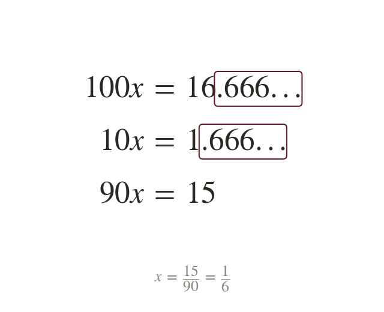

Two shifts when a digit comes first
A digit before the block needs two shifts. One reaches the block's start, and one its end.
When a digit comes before the block, one power of ten moves the point to the start of the block. Another moves it to the end of the first block.